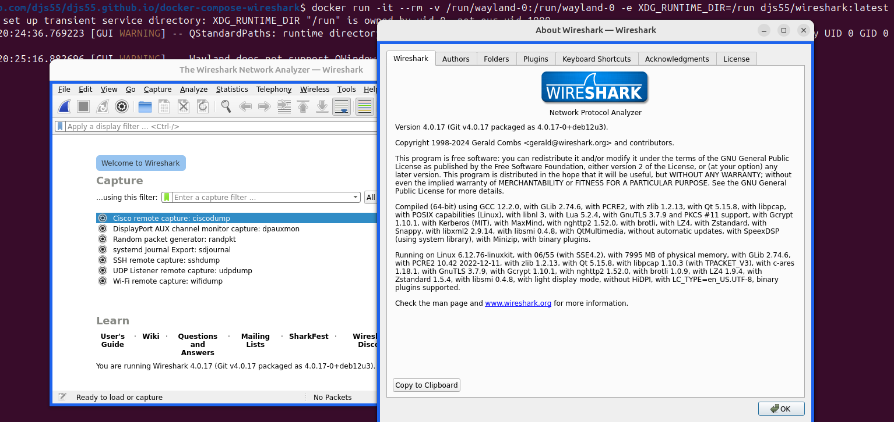
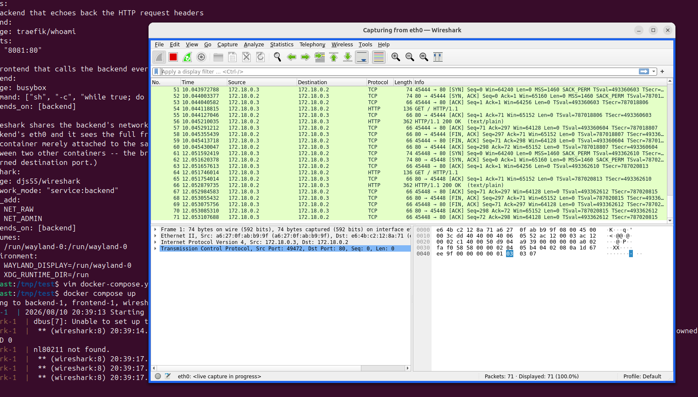

Debugging network problems can be painful. When logs aren't enough I reach for Wireshark, but when I'm running a Docker-based app on my Mac, the wireshark can't see the internal network traffic. I often resort to running tcpdump in a container, but then I need to remember the filter syntax, remember to "docker run -v" a directory, write the pcap, and then open it on the host (then change the code, capture again, reload etc etc). What I really want is for Wireshark to just work, directly inside Docker, attached directly to the docker network, with the GUI on my screen.
If I'm running the native docker engine on linux, I can run see the internal docker network interfaces and attach native wireshark to them, no problem. However Docker Desktop runs Linux in a virtual machine. This is necessary on Mac and Windows where you can't run Linux containers with Linux networking on the host (obviously) and also desirable, because it isolates your dev machine from the Linux environment. However this isolation means the host wireshark can't see the internal container traffic.
Docker Desktop 4.86.0 comes with a new beta version of Docker VMM, which runs the Linux VM. It exposes virtual interfaces in Linux for the network, disk devices, shared filesystems and also Linux graphics. Docker VMM powers Docker Desktop and the secure microVMs used by Docker Sandboxes.
To run Wireshark in a container as a demo, try this:
$ docker run -it --rm -v /run/wayland-0:/run/wayland-0 -e XDG_RUNTIME_DIR=/run djs55/wireshark:latestYou should see a Window like this:

Cut and paste this docker-compose.yml:
services:
# A backend that echoes back the HTTP request headers
backend:
image: traefik/whoami
ports:
- "8081:80"
# A frontend that calls the backend every couple of seconds
frontend:
image: busybox
command: ["sh", "-c", "while true; do wget -q -O - http://backend/ >/dev/null; sleep 2; done"]
depends_on: [backend]
wireshark:
image: djs55/wireshark
# Share the backend's network namespace and then we can capture on eth0
network_mode: "service:backend"
cap_add:
- NET_RAW
- NET_ADMIN
depends_on: [backend]
volumes:
- /run/wayland-0:/run/wayland-0
environment:
- WAYLAND_DISPLAY=/run/wayland-0
- XDG_RUNTIME_DIR=/runThen simply:
$ docker compose up Then select eth0 and then:

Docker VMM can do much more than this, download the latest Docker Desktop and give it a whirl!